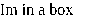

02024-1-26 Meta-Activity Richards American Defense Company
Super Hyper Merge Merge – Awareness, as nature reveals itself
∞ //
In this letter we disclose the hypermerge family of operations via generic alogorithm and cocursive data structure exposition. This conceptial theory of operation is, upon some specific mutation sequence, directly comparable to what you think that it is, verses how it is described here, is a reflexable comparation shema self describing systemic meta-function of cyberphysical linquistics, as desribed, so misunderstood.
If you are not quite unpacking the above paragraph, I really think you will like this one better. The above is what we can agree is an finite interpretable paragraphical condensation of meaning. In particular one can enumerate the parts of it that are known to be formally understood, because they are also the ones that are commonly inter-informally misunderstood. There is only 60 words in the above paragraph, and if we do not store capitalization in an copy we would have a compact 5-bit and we can agree that this fact is apparently not related to how one can misunderstand the above, but indeed it is totalled 26-based.
AIS and ASCII share an identical 5-bit representation of the 26 letter NATO alphabet. All code breakers must know about the decimal expansion of 1/26, OEIS code A021030. At the higher end of the mathematical abstraction, baroque as it may be, the the symmetric monoidal category. At the C programmer level we are going to be working with corcursive data structures and algorithms that are in the standard system library. This can be hooked into any existing program via system call override, and in the context of the kernel it patches it into our system calling program.
The objects under consideration are only indirectly comparable, this is the nature of a hyperfunction. The objects under consideration are the 60 words in the first paragraph. The dual system of there interpretation is objects considerer. This is the consideration system. This is a system of systems, and it is indexed by the log-theta-lattice. This is just a simple 2d grid as well, and so you can go up,down,left and right, and depending on if you go up or down or left or right this changes the compared interpretation by mutating it or its copy. That is to say, you can change the program or the kernel. And that in reality it doesn’t matter what you are doing, but how you are doing it.

Links
https://en.wikipedia.org/wiki/Systemic_functional_linguistics
https://www.math.mcgill.ca/barr/lambek/pdffiles/CMCphysics.pdf
https://www.kurims.kyoto-u.ac.jp/~motizuki/Inter-universal%20Teichmuller%20Theory%20IV.pdf
∞ //
VIM has modes. The modes have two types, positional and mutational. The modes are just a way to switch the function set of a limited number of keys, so if you have two keyboards you could be in two modes at once via proxy. In practice VIM is about working with single scale documents with a small width of units graphemes, with a windowed hight. A typical example size would be 80 columns and 26 rows. So its like an unformated spreadsheet excecpt you can only put one character in each cell. One could have a spreadsheet that is 80 columns and 26 rows and contains the ascii bit pattern, not sure what you would do with it though, but you could do something of use with something like that, abstractly, as a basic memory space where one could store and reinterpret what the code means. It is the case tho that the fact there is 80 columns and 26 rows is just an artifact of a viewing, and its not involved in storage. So we have an amazingly simple document type called unicode and here is its provided structure:
#include <sys/uio.h>
struct iovec {
void *iov_base; /* Address */
size_t iov_len; /* Size. */
};Yeah we can cast void * to any other type such as char *, it just means the provided length is meaningfull to the provider of the address as for intentional length in bytes of the bytes of the binary data at that address. So if we don’t want to cause an undesired system behavior we should not forget and respect the boundary as provided.
Now we provide the specimen meta function.
a1_based_mfunction(char *base, uint64_t sz) {
/* Write code for doing thing here. */
}
In maths we just write f(), because its minimal to mean function, and by function we mean that we are going to have a name for something that does something specificly with something appropriate to deal with.
The fact is that anything typed is typed along a line, in that it is linear in time. And if it is typed then it is encodable in VSCII which can encode anything else, such as ASCII, and usually if something is typed, then it is probably unicode, which is, a wonderfull thing.
What we now want to do is introduce a magic trick, lets print this opendocument file to pdf, then convert the pdf to a set of png images, one per page, and then open the png’s which will be in the form of a pixmap, one byte per pixel and 720 pixels for inch in order to eat ram. This document is specifcally a us letter format which just means its eight and half inches wide and 11 inches long. In order to follow DoD guidelines we must use a 1 inch margin on all sides, really it just means that the important parts of the document are in a 6.5inch by 9inch bounding box. And the alphabet and language used will be that which is in the Voice of America learning english word book for American English.
https://docs.voanews.eu/en-US-LEARN/2022/06/07/c4dbd6af-5f63-4f28-bc42-0bd175f4e4b4.pdf
Additionally no font smaller than 10pt is allowed so that in essence the document can be scanned at 300dpi and will be ideally losslessly quantized. A pt is 1/72 of an inch and a . or a pen point or the smallest mark you could make on a paper when poking it with a pen.
So what we almost have here is a lossless representation that is multimodal losslessly reconstructable in a useful way, some 6120x7920 png files, a pdf file, and unicode files,